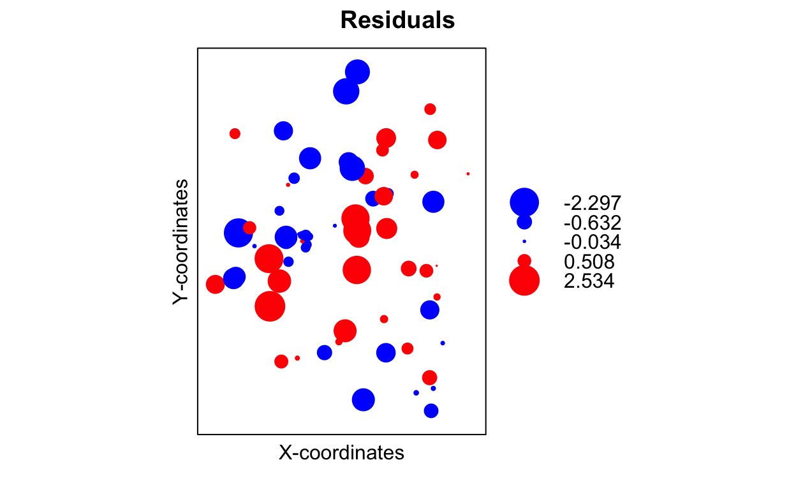

Spatial Modelling - Relative abundance of C3 and C4 plants
[Paruelo, J.M. & Lauenroth, W.K. (1996) Relative abundance of plant functional types in grasslands and shrublands of North America. Ecological Applications 6: 1212– 1224.]
Paruelo & Lauenroth (1996) analysed the geographic distribution and the effects of climate variables on the relative abundance of several plant functional types (PFTs), including shrubs, forbs, succulents (e.g. cacti), C3 grasses and C4 grasses. The latter PFTs represent grasses that utilise the C from the atmosphere differently in photosynthesis and are expected to have different responses to CO2 and climate change.
They used data from 73 sites across temperate central North America
and calculated the relative abundance of each PFT, based on the cover,
biomass, and primary production, at each site. These relative abundance
measures for C3 [C3] and C4 [C4] grasses are
the two response variables you will focus on.
The predictor variables recorded for each site included longitude and
latitude (LONG and LAT respectively measured
in centesimal degrees) and the projected version of these
(X and Y So noe distances are measured in km),
mean annual temperature (MAT; °C), mean annual
precipitation (MAP; mm), the proportion of precipitation
falling in winter between December and February (DJFMAP;
%), the proportion of precipitation falling in summer between June and
August (JJAMAP; %), and a categorical variable representing
biome (one for grassland, two for shrubland - NOT IN THE DATA
SET). The goal of their study was to define the environmental
drivers of the geographic distribution of PFT in temperate grasslands
and shrublands of central North America. The hypothesis behind the study
is that resource levels control the relative abundance of each PFT and
that this resource availability is captured by temperature and
precipitation patterns.
Data Exploration: Collinear
Now that you have the data on relative abundance and climate variables contained in the paruelo.csv file, it is time to explore the dataset.
Analyses will ONLY FOCUS on the log-transformed C4
(LC4) relative abundances as your response
Variable, and non-spatial variables as predictors
(MAT, MAP, JJAMAP,
DJFMAP).
We use these predictors as we know that these predictors are not collinear (all tolerances are larger than 0.1.). If you do not remember how to estimate this, see run the code below:
# Build a regression model using the lm() function where all six variables predict the relative abundance of C3 observations.
Clim.Only_lm <- lm(LC4 ~ MAT + MAP + JJAMAP + DJFMAP,
data = paruelo_df)
# Use the vif() function of the car package to estimate the tolerances (1/vif)
1/car::vif(Clim.Only_lm)Data Exploration: Model assuptions.
Your predictors are not collinear; but what about the other assumptions?
Your task: * Graphically evaluate the homogeneity of
variances, and normality of residuals assumption for the
Clim.Only_lm model.
# Evaluate the homogeneity of variances, and normality of residuals assumption
par(mfrow = c( ____ , ____ )) # set a 2x2 parameter space
# plot the `Clim.Only_lm` object
____ ( ____ )lm.SR <- lm(sr ~ pop15 + pop75 + dpi + ddpi, data = LifeCycleSavings)
plot(lm.SR)How good is a linear regression?
You all ready build a regression for log-transformed C4
(LC4) relative abundances when evaluating the collinearity
between predictors. This object is names Clim.Only_lm.
The question ow is how good of a model it is? for this you will check the R2 of this model.
Your task: * Extract the Multiple R-squared of the
Clim.Only_lm object.
# Extract the Multiple R-squared of the Clim.Only_lm object
summary(Clim.Only_lm)$____# Extract the Multiple R-squared of the Clim.Only_lm object
lm.SR <- lm(sr ~ pop15 + pop75 + dpi + ddpi, data = LifeCycleSavings)
summary(lm.SR)
str(summary(lm.SR))Based on the R2, an all predictors model explains a fair
amount (~69%) of the variance in LC4.
Climatic vs. Spatial Predictors
You will now look at the relation between relative abundance of C4
grasses (LC4) with environmental OR
spatial predictors.
Your task:
- Using the function
lm(), build an additive only model (NO INTERACTIONS) that focuses only on:- Climatic predictors (
MAP,MAT,JJAMAP,DJFMAP) to explain log-transformed C4-grasses (LC4) relative abundances. - Spatial predictors (
X,Y) to explain log-transformed C4-grasses (LC4) relative abundances.
- Climatic predictors (
# Climatic predictor model
Clim.Only_lm <- ____(____ ~ ____ + ____ + ____ + ____,
data = paruelo_df)
# Call the summary of Clim.Only_lm
____(____)
# Spatial predictors model
Spatial.Only_lm <- ____(____ ~ ____ + ____,
data = paruelo_df)
# Call the summary of Spatial.Only_lm
____(____)lm.SR <- lm(sr ~ pop15 + pop75 + dpi + ddpi, data = LifeCycleSavings)Based on the print-out of the summary() function, you
can assess which are the most relevant Climatic predictors and if a
model that only considerer spatial predictors explains a similar amount
of variability as one that only considers spatial predictors.
It is clear that the climatic variables are key determinants of changes in Log-transformed C4 relative abundances. However, considering only the spatial location of the observations provides a similarly good model, which means that model that explicitly considers space might be adequate.
Spatial correlation in the response variable [Moran’s I]
One important point in the data exploration process when dealing with spatial data is assessing the Spatial Autocorrelation in the response variable. Moran’s I is a way to measure spatial autocorrelation based on feature locations and feature values.
Moran’s I is similar (but analogue) to correlation coefficients. While other coefficients measure perfect to no correlation, Moran’s is slightly different (due to the more complex, spatial calculations). It measures how one object is similar to others surrounding it. If Moran’s I is equal to +1 indicates perfect clustering of similar values (it is the opposite of dispersion). If Moran’s I is equal to -1, it means that there is perfect clustering of dissimilar values (you can also think of this as perfect dispersion). If Moran’s I equals 0, there is no autocorrelation (perfect randomness).
To calculate Moran’s I, you will need to generate a matrix of weights based on the distance between points i and j \((d_{ij})\). You can transform \(d_{ij}\) to weights \((W_{ij})\) using a a function like the inverse distance (\(\frac{1}{d_{ij}}\)) or the inverse squared distance (\(\frac{1}{(d_{ij})^2}\).
Your task:
- Using the
Moran.I()method from theapepackage, estimate the Moran’s I index for log-transformed C4-grasses (LC4) relative abundances. For this. you will:- Estimate the Euclidean Distances Between observations Based on the
projected coordinates (vars
XandY). - Estimate the weights as the inverse distance of the Euclidean Distances Between observations (\(\frac{1}{d_{ij}}\)).
- Calculate Moran’s I using the function
Moran.Iof the packageape.
- Estimate the Euclidean Distances Between observations Based on the
projected coordinates (vars
# Generate a distance matrix using a Euclidean distance and the dist() function.
# Distances should be based on the "X" and "Y" variables.
parueloDist <- ____(paruelo_df[,c("____","____")]) # implement the function of a data.frame with only Longitude and latitude.
# Estimate the inverse of the matrix values (the weighted matrix).
parueloInvDist <- 1 / ____
# Transform the parueloInvDist object from a distance object to a matrix using the as.matrix() function.
parueloInvDist <- ____(____)
# Replace the diagonal entries with zero.
diag(parueloInvDist) <- 0
# You have created a matrix where each off-diagonal entry [*i* , *j*] in the matrix equals 1/(distance between point *i* and point *j*). Now use it to estimate Moran's I.
Moran.I(x = rstandard(Clim.Only_lm), # A vector with the standarized residuals.
weight = ____) # The matrix of weighted distancesPosDtFrm <- data.frame(x = runif(100),
y = runif(100),
z = rpois(100, lambda = 10))
## weights w[i,j] = 1/d[i,j]:
Inv.Distance <- 1/as.matrix(dist(PosDtFrm))
## set the diagonal w[i,i] = 0 (instead of Inf...):
diag(Inv.Distance) <- 0
# Moran I
Moran.I(x = PosDtFrm$z,
w = Inv.Distance)If using latitude and longitude coordinates from more distant
locations, it’s wise to calculate distances based on spherical
coordinates (the spDists() function of the sp
package can be useful for this). Those interested in trying this, I
encourage you to re-run the code above but instead of using the function
dis() to estimate distances stored in the object named
parueloDist, use the spDists() function.
Assessing for spatial autocorrelation - bubble-plots.
The first law of geography states that “Everything is related to everything else, but near things are more related than distant things”. In the context of this practical, what you are interested in is if the spatial location of the samples introduces “spatial autocorrelation” in our residuals - hence making our observations non-independent.
A first and simple step to assess if there is a spatial structure in the residuals of your model is to plot these (that is, the standardised residuals) in a spatial context.
Your task:
Using the spatial coordinates (
XandY) to represent the location of the observations, plot the standardised residuals (\(\frac{Residual_i}{Residual_i-SD}\)) obtained by the climate-only linear regression model (Clim.Only_lm). For this, you will:- Get the standardised residuals for the
Clim.Only_lm - Plot the
XandYto make a scatter-plot and use the standardised residuals to define the bobble size (based on the magnitude) and colour (based on the sign) of the plotted points. - Add a legend for reference.
- Get the standardised residuals for the
# Extract the standardized residuals of the climate only model using the rstandard() function. See https://bit.ly/3thrZPb
ClimStdRes <- rstandard(____)
# Plot the standardised residuals in space using X to determine the x-positions and Y to define the y - positions.
# The size of the bobble is based on the residuals magnitude, and the colour is based on the residuals sign (Red for negative - blue for positive)
plot(x = paruelo_df$____, # the X-coordinates (Longitude)
y = paruelo_df$____, # the Y-coordinates (Latitude)
pch = 19, # make the point full
col = ifelse(____, # Logical test to determine if the Residual is positive or negative
"blue", # if positive then colour blue
"red"), # if negative then colour red
cex = 1.5*abs(____), # rescale the size
xlab = "X-coordinates", # X-axis name
ylab = "Y-coordinates", # Y-axis name
main = "Residuals" # Figure name
)
# Add a legend on the top-right position of the plot, that indicates the colour-size relation - Use 10 levies (5 for the positive and 5 for the Negative).
legend("topright", # position
pch = 19, # make the points full
col = c(rep("____",5),# set the negative colours
"white",
rep("____",5)),# set the positive colours
pt.cex = 1.5*abs(seq(-2.5,2.5,by=0.5)), # set the point size for the positive/negative values
legend = seq(-2.5,2.5,by=0.5) # Range of positive/negative values
)plot(x = runif(100),
y = runif(100),
cex = runif(100, 1,2),
pch = 19)The figure above provides an informal approach of judging whether there is spatial dependence (e.g. groups of negative or positive residuals close to each other). This is what you see!!.
Before moving on, you should know that there is an “automated”
version of the figure above as part of the sp package
(implemented as the bubble() function). This produces a
very similar figure to the one above but requires that you understand
what are SpatialPointsDataFrames, which is a topic for a
later stage. Nonetheless, the R code for it is below for
those interested.

Spatial correlation in the Residuals [semi-variograms]
There are many quantitative tools to detect Spatial Autocorrelation in your data or model residuals. The semi-variogram of the residuals provides a way to measure the spatial dependence between two sites with coordinates x1 and x2. Sites that are close to each other would then have similar values of the variable of interest (residuals in this case). All this is to say that the semi-variogram describes the covariance between observations.
In practice, a semi-variogram takes all points to assess how similar they are based on the distance between them, and it uses these to calculate the sample (or experimental) semi-variogram. Without going into too much detail on how the experimental semi-variogram is estimated (more on that at a later stage), the important point is that large values indicate spatial independence.
In R, a semi-variogram can be estimated using multiple
functions. Here you will use the Variogram() function from
the nlme package. However, to run this
function, you have to re-run you model as a Generalized least Squares
using the function gls() of the nlme
package.
Your task:
- Using the
Variogram()function of thenlmepackage, build and plot a correlogram that describes the spatial autocorrelation in the log-transformed C4-grasses relative abundances (LC4). For this, you will:- Re-run the Climate only linear model `
Clim.Only_lmas a Generalized least Squares model using the functiongls()of thenlmepackage. - Build a spatial correlograms using the
Variogram()function of thenlmepackage. For this you need to define as a formula the spatial location of each observation (just like you did when creating anSpatialPointsDatafarme). - Plot the spatial correlogram.
- Re-run the Climate only linear model `
# Re-run the model as GLS
Clim.Only_gls <- ____(formula(____), # Get the Formula form the LM model
data = paruelo_df, # The data.frame,e with the variables
method ="REML") # The inference method
# Build a spatial correlograms
paruelo.Vargrm <- ____(____, # The gls model
form = ~ ____ + ____, # the way correlation is defined - here as
resType = "normalized", # the type of residuals to use
maxDist = 1000, #Set limits to the Semi-variagram space (Semivarainces at extremely large distances do not make sense)
data = paruelo_df) # The data.frame,e with the variables
# Plot the semi-variogram
plot(____, # Define the Variogram object
smooth = T, # Add a trend line?
ylim = c(0,1.6)
)Adding Spatial Correlation Structures to the Model.
Both the bubble plot and the experimental semi-variogram indicate that there is a spatial correlation in the residuals. Now, the issue is how you can go from an “informal” graphical assessment to a more numerical approach to incorporate the (possible) spatial autocorrelation into your model. This process is based on including multiple correlation structures in your model and using the AIC, BIC, or likelihood ratio test to judge if a model with or without spatial correlation is the best. This process works similarly to what you have done for model selection.
The question now is how do you include a spatial residual
correlation structure in a linear-regression, additive model, or
(additive) mixed model? You add a correlation structure by
specifying the correlation argument in a model created
using the gls() function
For this, you need to know the shape of the variogram. The most
common of these are the Exponential (corExp()), Gaussian
(corGaus()), Linear (corLin()), and Spherical
(corSpher()). Each of these options implies a specific
mathematical structure and shape: exponential for corExp(),
sigmoidal for corGaus(), asymptotic for
corSpher(), or linear for corLin()
Your task:
- Add a series of spatial correlation structures to the climate only
glsmodel (Clim.Only_gls) created to build your semi-variogram. To streamline the process, you will build a series of models that use:- An Exponential correlation using the
corExp()function. - A Gaussian correlation using the
corGausfunction. - A Linear correlation using the
corLinfunction. - A Rational quadratic correlation using the
corRatiofunction. - A Spherical correlation using the
corSpherfunction.
- An Exponential correlation using the
# Model with an Exponential correlation structure.
Exp.Clim.Only_gls <- gls(LC4 ~ MAP + MAT + JJAMAP + DJFMAP, # formula
data = paruelo_df, # Object with the data
correlation = ____(form = ~ ____ + ____, # define the correlation structure
nugget = ____), # Is there a Nugget? - Variability for lag distance 0?
method = "REML")
# Call the regression
Exp.Clim.Only_glsm1 <- gls(follicles ~ sin(2*pi*Time) + cos(2*pi*Time), Ovary,
correlation = corAR1(form = ~ 1 | Mare))# Build a model with a Gaussian correlation structure.
Gaus.Clim.Only_gls <- gls(LC4 ~ MAP + MAT + JJAMAP + DJFMAP, # formula
data = paruelo_df, # Object with the data
correlation = ____(form = ~ ____ + ____, # define the correlation structure
nugget = ____), # Is there a Nugget? - Variability for lag distance 0?
method = "REML")
# Call the regression
Gaus.Clim.Only_glsm1 <- gls(follicles ~ sin(2*pi*Time) + cos(2*pi*Time), Ovary,
correlation = corAR1(form = ~ 1 | Mare))# Build a model with a Linear correlation structure.
Lin.Clim.Only_gls <- gls(LC4 ~ MAP + MAT + JJAMAP + DJFMAP, # formula
data = paruelo_df, # Object with the data
correlation = ____(form = ~ ____ + ____, # define the correlation structure
nugget = ____), # Is there a Nugget? - Variability for lag distance 0?
method = "REML")
# Call the regression
Lin.Clim.Only_glsm1 <- gls(follicles ~ sin(2*pi*Time) + cos(2*pi*Time), Ovary,
correlation = corAR1(form = ~ 1 | Mare))# Build a model with a Rational quadratic correlation structure. function.
Ratio.Clim.Only_gls <- gls(LC4 ~ MAP + MAT + JJAMAP + DJFMAP, # formula
data = paruelo_df, # Object with the data
correlation = ____(form = ~ ____ + ____, # define the correlation structure
nugget = ____), # Is there a Nugget? - Variability for lag distance 0?
method = "REML")
# Call the regression
Ratio.Clim.Only_glsm1 <- gls(follicles ~ sin(2*pi*Time) + cos(2*pi*Time), Ovary,
correlation = corAR1(form = ~ 1 | Mare))# Build a model with a Spherical correlation structure.
Spher.Clim.Only_gls <- gls(LC4 ~ MAP + MAT + JJAMAP + DJFMAP, # formula
data = paruelo_df, # Object with the data
correlation = ____(form = ~ ____ + ____, # define the correlation structure
nugget = ____), # Is there a Nugget? - Variability for lag distance 0?
method = "REML")
# Call the regression
Spher.Clim.Only_glsm1 <- gls(follicles ~ sin(2*pi*Time) + cos(2*pi*Time), Ovary,
correlation = corAR1(form = ~ 1 | Mare))Comparing models with Spatial Correlation Structures.
Now you have a pool of models where you have numerically determined the possible correlation structures. The next step is to assess how these models fit the data using the AICs criteria, where the best model is the one with the lowest AIC.
You can also apply a hypothesis test with the anova()
function. To begin, you compare each of your correlation defined models
to the No correlation model. Then, you compare the AIC of the
correlation defined models that perform better than the no correlation
model.
Your task:
- Compare each of the models you have defined a correlation structure
to the model without the spatial correlation
(
Clim.Only_gls) using:- The AIC criteria.
- Log-likelihood ratio test.
- Build a table where you summarise these comparisons
# get the AIC of all the models
AICsumm <- AIC(Clim.Only_gls, # No correlation
____.Clim.Only_gls, # Exponential
____.Clim.Only_gls, # Gaussian
____.Clim.Only_gls, # Linear
____.Clim.Only_gls, # Rational
____.Clim.Only_gls) # Spherical
# change the table row names
rownames(AICsumm) <- c("NoCor", "Exponential", "Gaussian", "Linear", "Rational", "Spherical")
# make a column to store the P-values
AICsumm$P.value <- NA
# Model comparisons for the Exponential model
ExpComp <- anova(Clim.Only_gls, # Climate only
____.Clim.Only_gls # Model with cor structure
)
# Save Output
AICsumm ["Exponential", "P.value"] <- ____[____, ____]
# Model comparisons for the Gaussian model
GausComp <- anova(Clim.Only_gls, # Climate only
____.Clim.Only_gls # Model with cor structure
)
# Save Output
AICsumm ["Gaussian", "P.value"] <- ____[____, ____]
# Model comparisons for the Linear model
LinearComp <- anova(Clim.Only_gls,
____.Clim.Only_gls # Model with cor structure
)
# Save Output
AICsumm ["Linear", "P.value"] <- ____[____, ____]
# Model comparisons for the Rational model
RationalComp <- anova(Clim.Only_gls,
____.Clim.Only_gls # Model with cor structure
)
# Save Output
AICsumm ["Rational", "P.value"] <- ____[____, ____]
# Model comparisons for the Spherical model
SphericalComp <- anova(Clim.Only_gls,
____.Clim.Only_gls # Model with cor structure
)
# Save Output
AICsumm ["Spherical", "P.value"] <- ____[____, ____]
# Print the summary table
AICsummfm0 <- gls(follicles ~ sin(2*pi*Time) + cos(2*pi*Time), Ovary)
fm1 <- gls(follicles ~ sin(2*pi*Time) + cos(2*pi*Time), Ovary,
correlation = corAR1(form = ~ 1 | Mare))
AIC(fm0,fm1)
anova(fm0,fm1)“Exponential”, “Gaussian”, “Linear”, “Rational”, “Spherical”
Is the spatial autocorrelation problem solved?
From the AICs and likelihood ratio test, you can conclude that the independence assumption is not met in the linear regression model. A Rational quadratic correlation form is the best way to describe this. But, how has this changed the distribution of residuals? For this, visualising an experimental variogram of ** normalised** residuals of the model fitted spatial correlation. These should no longer show a spatial correlation (you should see a horizontal band of points).
Your task:
- Plot the Semi-variogram of normalised residuals of the model fitted with the bests spatial correlation structure.
# Estimate the variogram of the residuals from the model with the best correlation structure, setting the max lag distance to 10, and using normalized residuals.
Ratio.Vario.gls <- Variogram(____.Clim.Only_gls, # a gls model
form = ~ ____ + ____, # define the source of the spatial data
resType = "____", # define the type of residuals
maxDist = 1000, #Set limits to the Semi-variagram space (Semivarainces at extremely large distances do not make sense)
data = paruelo_df)
# plot the variogram with a smoothed line
plot(____,
smooth = T,
ylim = c(0,1.6) # Set limits to the plot space (Semivarainces at extremely large distances do not make sense)
)
# Estimate the variogram of the of climate-only model residuals, setting the max lag distance to 10, and using normalized residuals.
Vario.gls <- Variogram(Clim.Only_gls, # a gls model
form = ~ ____ + ____, # define the source of the spatial data
resType = "____", # define the type of residuals
maxDist = 1000, #Set limits to the Semi-variagram space (Semivarainces at extremely large distances do not make sense)
data = paruelo_df)
# plot the variogram with a smoothed line
plot(____,
smooth = T,
ylim = c(0,1.6) # Set limits to the plot space (Semivarainces at extremely large distances do not make sense)
)Finding the best fixed-effects
As when you implemented models with variance structures or random effects, your job is not done after defining the best correlation structure. Now you need to find the best fixed-effects structure using t-statistics, AIC/BIC, or likelihood ratio-test. Like before, you will be using a likelihood ratio-test approach that requires specifying a full model and a nested reduced model.
Remember that the order used to simplify any model is:
Remove non-significant interaction terms,
Remove non-significant quadratic or other non-linear terms,
Remove non-significant explanatory variables - if you remove an explanatory variable, all interactions in the model that contain it should also be removed.
Group together factor levels that do not differ from one another.
STOP! when all parameters are significant!
Your task:
- Simplify the model with the best correlation structure using a likelihood approach.
REMEMBER that the model used to define the best
correlation structure have been fitted using the gls()
function (hence uses method = "REML". Before you start your
likelihood contrast, re-fit the model using
method = "ML".
To simplify things, you will use the function stepAIC()
from the package MASS to do the model section.
# Refit the model with the best correlation structure as a gls using the method = "ML"
Ratio.Clim.Only_gls.ML <- gls(formula(____.Clim.Only_gls), # formula
data = paruelo_df, # Object with the data
correlation = ____(form = ~ ____ + ____, # define the correlation structure
nugget = ____),
method = "____" # Specify that the model is fitted using ML
)
# Use the function `stepAIC()` from the package `MASS` to do the model section.
Ratio.Clim.Only_gls.Final <- stepAIC(____,
trace = 0)
# Call the summary of the final model
____(____)Final model
So now you have the final model is time to assess if you can safely assume normality and homogeneity in the residuals.
Your task:
- Assess if the assumptions of linear regressions are full-filled.
REMEMBER The model used to define the best
fixed-structure has been fitted using
method = "ML". Before you start your model assessment, re-fit the model usingmethod = "REML". Here you will test:- Homogeneity of variances.
- Normality of residuals.
- Residuals not spatially autocorrelated.
# Refit model with the best combination of fixed effects as a gls using the method = "REML"
Ratio.Clim.Only_gls.Final <- update(____,
method = "____")
# Are residuals homogeneous
plot(____)
# Are residuals normal - use a qqplot
qqnorm(residuals(____, "____"), # the Residuals object
pch = 19) # set the type of point to plot
qqline(residuals(____, "____"), # the Residuals object
col = "red", # set colour
lty = 2, lwd = 2) # set line type and width
# Are residuals autocorrelated?
# Estimate the variogram for the residuals in Ratio.Clim.Only_gls.Final
Ratio.Vario.gls <- Variogram(____, # a gls model
form = ~ ____ + ____, # define the source of the spatial data
resType = "____", # define the type of residuals
maxDist = 1000, #Set limits to the Semi-variagram space (Semivarainces at extremely large distances do not make sense)
data = paruelo_df)
# plot the variogram with a smoothed line
plot(____,
smooth = T,
ylim = c(0,1.6) # Set limits to the plot space (Semivarainces at extremely large distances do not make sense)
)With this, you can now be sure you have the best model to predict the relative abundance measures for C4 grasses.
Final points
Spatial autocorrelation may be seen as both an opportunity and a challenge for statistical analysis. It is an opportunity when it provides useful information for inference of process from patterns by, for example, increasing our understanding of contagious biotic processes such as population growth, geographic dispersal, differential mortality, social organisation or competition dynamics.
However, the presence of spatial autocorrelation poses a serious shortcoming for hypothesis testing and prediction in most cases. This is because it violates the assumption of independently and identically distributed errors of most standard statistical procedures. As a result, spatial autocorrelation can inflate type I errors, and on occasions, even inverting the slope of relationships from a non-spatial analysis.
A variety of methods have consequently been developed to correct for the effects of spatial autocorrelation. Here you have implemented two of these: the use of generalised least squares models with a correlation structure and Simultaneous Autoregressive Models (SARs).